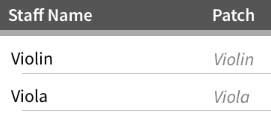
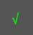

Discussion: This is the first of a series of short tutorials meant to be worked through in order. At the top is a checkmark. When you have completed a tutorial, tap on the checkmark to turn it green so you know which you have completed. You can go back and reread any tutorials at any time.
1. Tap on at the top left of the main menu bar.
2. The next window is titled, "Scores Manager." Tap "Create New Score" then enter a title and (optionally) a composer and opus in those fields.
3. Then tap "Custom Document.."
3. In the "Staff Chooser" window (at the top), tap on "violin" and then "cello". You should now see two staffs added to the list at the bottom. If you wish, you can tap on either staff name and change what it is called. It will still, however, sound like a violin and cello. Both staff name and instrument assigned can be changed later. 
4. Tap on  to create your new score.
Result: You've learnt how to create a new score with custom instruments. You could have also tapped on one of the preset templates listed after "Custom Document.."